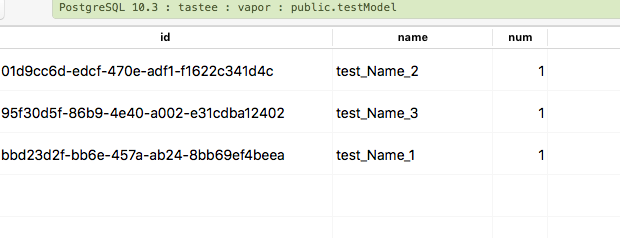

Generic Migrations in Fluent
So we pre-populated our database with initial data in previous two tips.
We added some simple data in Pre-populating a Database with Data in Vapor](/Pre-populating%20a%20Database%20with%20Data%20in%20Vapor/). And even added related data in [Pre-populating Related Tables in Vapor.
That’s fine, but it is all related to #postgresql.
What if we wanted to make it work with all the databases that Vapor supports.
Well in that case we need a Generic Migration.
import Async
import Fluent
import Foundation
public final class TestModel<D>: Model where D: QuerySupporting {
public typealias Database = D
public typealias ID = UUID
public static var idKey: IDKey { return \.id }
public static var entity: String {
return "testModel"
}
public static var database: DatabaseIdentifier<D> {
return .init("test")
}
var id: UUID?
//How can I make id an Int?
var name: String
var num : Int
init(name: String, num: Int) {
self.name = name
self.num = num
}
}
extension TestModel: Migration where D: SchemaSupporting, D: QuerySupporting { }
extension MigrationConfig {
public mutating func addTestModels<D>(for database: DatabaseIdentifier<D>)
where D: QuerySupporting, D: IndexSupporting {
self.add(model: TestModel<D>.self, database: database)
}
}
let testNames = [
"test_Name_1",
"test_Name_2",
"test_Name_3"
]
internal struct TestModelMigration<D>: Migration where D: QuerySupporting & SchemaSupporting {
typealias Database = D
static func prepare(on connection: Database.Connection) -> Future<Void> {
//Insert all names
let futures : [EventLoopFuture<Void>] = testNames.map { name in
return TestModel<D>(name: name, num: 1).create(on: connection).map(to: Void.self) { _ in return }
}
return Future<Void>.andAll(futures, eventLoop: connection.eventLoop)
}
static func revert(on connection: Database.Connection) -> Future<Void> {
do {
// Delete all names
let futures = try testNames.map { name in
return try TestModel<D>.query(on: connection).filter(\TestModel.name, .equals, .data(name)).delete()
}
return Future<Void>.andAll(futures, eventLoop: connection.eventLoop)
}
catch {
return connection.eventLoop.newFailedFuture(error: error)
}
}
//I tried adding indexes, but just adding this function gives me Swift error:
//Command failed due to signal: Segmentation fault: 11
//It works in:
//https://github.com/vapor/fluent/blob/7e5b7f69b88c018fe7b07293e3fc284cbb9060be/Sources/FluentBenchmark/Toy.swift
public static func makeFieldsAndIndexes(on connection: Database.Connection) -> Future<Void> {
return Database.create(self, on: connection) { builder in
try addProperties(to: builder)
try builder.addIndex(to: \.name, isUnique: true)
}
}
}
Run your migration
In configure.swift add the code:
migrations.add(model: TestModel<PostgreSQLDatabase>.self, database: .psql)
migrations.add(migration: TestModelMigration<PostgreSQLDatabase>.self, database: .psql)
And the data is added:

Open questions:
- How can I add a model who’s ID is Int
- How do I access
builderto add indexes and constraints?
Prev: Pre-populating Related Tables in Vapor
Next: Revert Last Migration